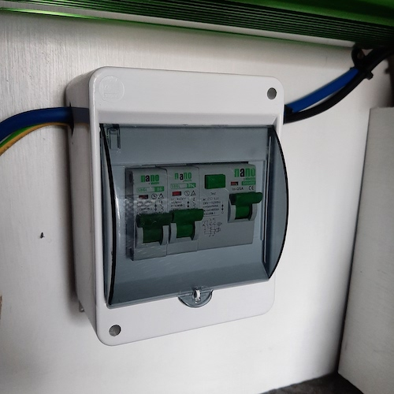
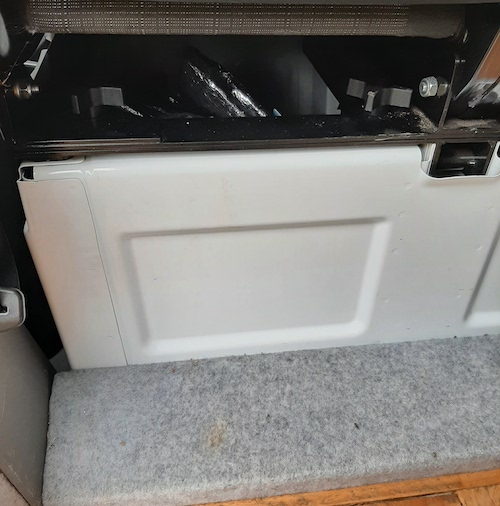
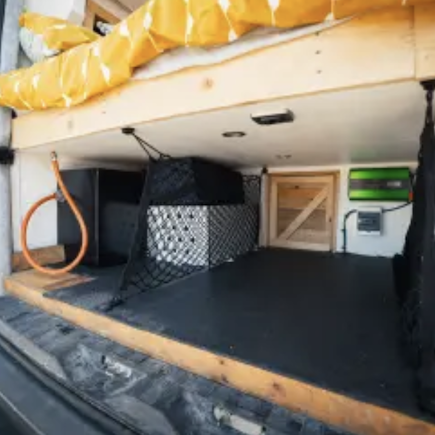

Interior
Getting to know your mobile home and setting up for a great night's sleep.
Power Usage
-
Power LevelsThe van display the power level below the bed next to the kitchen
-
Circuit Breaker and FusesIf the power is unavailable you can check the circuit breaker and fuses in the boot
- The breaker is right at the back of the centre boot space 
- The fuses are located next to the battery and require the unscrewing of the right side pod to access the electronics area. If you need to do this get in touch with us.
{kind=link}
{kind=link}
{kind=link}
{kind=link}
{kind=link}
Lighting
{kind=link}
{kind=link}
Privacy
-
BlindsUnwrap and use the blinds to cover the cab windows from the inside

Cooling
{kind=link}
{kind=link}
Heating
-
Diesel HeaterThe Diesel Heater can be used to heat up the van
- Use the control panel beneath the bed to turn on the heater and adjust the temperature
- There is a button to turn on the heater and to adjust the temperature
- Once the van is warmer turn off the heater to save the diesel
But if you did need to top it up: Hopefully this is always topped up and you never have to. Please get in touch if you have any questions as it's important not to spill any fuel
{kind=link}
{kind=link}
Storage
-
ShelvingThere are 4 shelving units opposite the kitchen. Ideal for food and clothes

-
Under the passenger seats Both the front and rear passenger seats have cavity storage space. Ideal for drinks or food. If children’s seats are in use then access is restricted
-
In the boot An area under the bed is available for storage. Ideal for activity items
-
On the top bedWhen on the move camp chairs and soft items can be stored on the top bed
{kind=link}
{kind=link}
{kind=link}
Dining
-
Interior Table
- The front 3 seats can all be swivelled 180 degrees so that a 5 seater dining setup can be created around the table
- First undo the 8 bolts under the seats that connect the seats to the base and place them on the shelf above the passenger seat for safe keeping
- Now the seats cab swivel around by hand
- It it easier to do this if you open the doors to the cab on both sides as it gives more room to turn the seats
- You will need to move the seatbelts as you go and reverse back the other direction when you put the seats back to avoid the seatbelts being twisted
-
The drivers side can be trickier as you have to contend with the handbrake.
You can slide the drivers seat forward or backwards to make sure it is central again to be able to swivel the seat
Bedding
-
Securing childrenUse the cargo net by attaching it to the roof hoops in order to add a safety net to those sleeping up top
-
Blackout blindUse the blackout blink and drape over the curtain rail to cover the whole gap in the bedroom
-
Raising the Bed
- The top bed is hinged and so can be raised up to provide additional head room for sitting up on the bottom bed
- There are 2 hoops on the roof and two hoops just under the mattress of the top bed which can be seen by slightly folding back the mattress
- To raise the bed it needs to be lifted up and attached to the rings in the roof with the heavy duty carabiner clips
- As the top bed is rather heavy this is typically a two person job.
- One person lifts up (or lays on the bottom bunk and uses their legs) the top bunk to the roof. The other person attaches the carabiners to the roof loops
- It’s easier to do the hoop at the front of the van and then go through the rear doors to do the hoop near the rear.
- It’s quite comfortable to chill in the bed without raising it but this is another option to try out
{kind=link}
{kind=link}
{kind=link}
Troubleshooting
Too Dark
Fix
Use the USB light in the side pods to have something to use to read
Too Light
Fix
Fill the vent windows with the additional small cushions and then use the blackout blind and
hang it over the curtain rail above the top bed. It will fill the gap and provide darkness
to the whole bed
Too Cold
Fix
The heater can be used to warm up the van and then extra blankets to keep warm until morning
Too Hot
Fix
Set a ceiling fan to draw the air out the van, then open the vent windows slightly, this
will create a draft that pulls cool are over you while you sleep